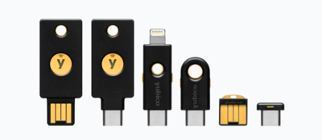

▻
1.1 Authentication and Authorisation Scencarios
Some questions to ask yourself:
- Do I only need authentication (is this the user?)
- Do I need authorisation to access resources on other servers in the users name?
- Is one factor enough? Do I want to support 2 factor authentication?
- Who does the authentication? My own app or another "authentication provider"?
- Which programs need to authenticate? Browsers? Native apps? Command line programs?
- Are users expecting a "single sign on"?
▻
1.2 Two Factor Authentication
any combination of:
- Something you know - a password or a pin
- Something you have - mobile phone or a security token like a YubiKey
- Something you are - fingerprint, retina scan, FaceID
- Something you do - typing speed, locational information etc.
▻
1.3 Different types of programs
When creating command line programs, web apps, native apps we
have different possibilities.
You already know how to use HTTP Cookies for authentication
in a web app. Command line programs and native app do not use cookies
automatically as browser do.
To illustrate this let's look at a command line program.
▻
1.4 Command Line Authentication Flow:
Here an example of an authentication flow for the
office365 command line tool:
- start the process on the command line

the program opens a browser at a special Microsoft login page
and asks you to type in a short string there.

go throug the usual steps of login

final screen in the browser shows success

back in the command line program you are now authorized.

▻
2 How to add state to HTTP
When thinking about Authentication and Web Applications we
first have to overcome the stateless nature of HTTP.
There are several ways to do this:
- HTTP Basic Authentication
- HTTP Cookies
- Bearer-Token
▻
2.1 HTTP Basic Authentication
This is the oldest method. It still works in all the browser, but is not used much
any more because the UI is very restrictive.

It is specified in RFC 1945, section 11.
- The Browser requests access to a resource;
- The server sends a
WWW-Authenticate: Basic ... header in the response, but not the resource;
- The browser asks the user for username and password through a popup window
- The browser sends the (hashed) username and password to the server with all subsequent request using the HTTP Headers
Authorization: Basic ...
This can be configured in the web server.
▻
2.2 HTTP Cookies
HTTP Cookies are defined in RFC 6265.
- The server sets the cookie (using the Header 'Set-Cookie'),
- the client includes the cookie automatically in every subsequent request to the server (using the HTTP Header
Cookie).
Cookies are often integrated into backend frameworks as a method
to identify sessions.
▻
2.3 Bearer Token
This method uses the same HTTP Header Authorization as HTTP Basic authentication,
rfc 1945, section 11.
The client sends the token with the Authorization: Bearer ... HTTP header.
▻
3 Web Authentication "WebAuthn"
Web Authentication, or short "WebAuthn" is a W3C standard
that has been implemented in all Browsers since 2020.
You a User you have to own an authenticator: for example a YubiKey, USB Token,
or your smartphone.
This Authenticator
is a powerful "second factor": it can do cryptographic computation and it can
store data.

This diagram from auth0 shows the players
in this form auf authentication:

The server you want to log into is called the "relying party".
During Registration the relying party supplies data called "challenge". The JavaScript
in the users browser calls navigator.credentials.create() with this challenge. This makes
the browser call the authenticator device with the challenge data. The device might ask the user
for some form of consent, for example given through a fingerprint or a touch sensor.
The result is a public/private key pair.
During Authentication (or "attestation") the same challenge from the relying party
is given to the authenticator.
See also
▻
4 OpenID + OAuth
OpenID 2.0 is an open standard for Authentication.
OAuth is and open standard for API Access delegation originally published in 2010.
The current version is OAuth 2.0, published as RFC 6749 and RFC 6750 in 2012.
Both follow the same flow:
- The user requests a resource or site login from the application.
- The site sees that the user is not authenticated. It formulates a request for the identity provider, encodes it, and sends it to the user as part of a redirect URL.
- The user's browser makes a request to the redirect URL for the identity provider, including the application's request
- If necessary, the identity provider authenticates the user (perhaps by asking them for their username and password)
- Once the identity provider is satisfied that the user is sufficiently authenticated, it processes the application's request, formulates a response, and sends that back to the user along with a redirect URL back to the application.
- The user's browser requests the redirect URL that goes back to the application, including the identity provider's response
- The application decodes the identity provider's response, and carries on accordingly.
- (OAuth only) The response includes an access token which the application can use to gain direct access to the identity provider's services on the user's behalf.
▻
5 JWT
JSON-Web-Token are a way to encode and sign JSON-Data. You
can use many transmission methods to send them:
- HTTP-Headers
Authorization: Bearer ... or Cookie
- Parameter in an URL
- POST data
jwt.io / rfc 7519
▻
5.1 Encoding a Token
A JWT consists of three parts: header, payload and signature.
All three are encoded and concatenated with a dot. The result
looks like this (if you color-code it):

The encoding consists of two steps:
- with Base64
endcoding the input string is converted to a new, longer string of only 64 characters
that are considered "save" for transfer via (ASCII only) e-mail. Three bytes of the original are encoded into 4 bytes in
the resulting string. Base64 encoded strings may contain plus signs and are
padded with equal signs at the end.
- As a second step the plus signs are replaced by minus signs and
the padding is dropped, resulting in a string that can be used in a URL without problems:
{ "msg_en": "Hello",
"msg_jp": "こんにちは"
"msg_de": "Guten Tag" }
eyAibXNnX2VuIjogIkhlbGxvIiwKICAibXNnX2pwIjogIuOBk+OCk+OBq+OBoeOBryIKICAibXNnX2RlIjogIkd1dGVuIFRhZyIgfQ==
eyAibXNnX2VuIjogIkhlbGxvIiwKICAibXNnX2pwIjogIuOBk-OCk-OBq-OBoeOBryIKICAibXNnX2RlIjogIkd1dGVuIFRhZyIgfQ
You can use the JWT Debugger to decode this.

▻
6.1 OAuth
The gem omniauth helps you deal with OAuth2, OpenID, LDAP, and many
other authentication providers. The list of strategies
is quite impressive. Think carefully about what services your users
are using, and which services might be useful to your app: could
you use Dropbox to authenticate, and also to deliver data directly
to your user's dropbox? Would it make sense to use Facebook or Twitter and also
send out messages that way? Or are your users very privacy conscious and
want to avoid Facebook and Google?
You will need the Gem omniauth and
additional gems for each provider. For example if you
want to use both Github and Stackoverflow for your web app geared
towards developers, you would need three gems:
gem 'omniauth'
gem 'omniauth-github'
gem 'omniauth-stackoverflow'
▻
6.3 JSON Web Tokens (JWT)
Use the gem jwt
- devise_token_auth for token based authentication for API only Rails apps
▻
7 next.js
The package next-auth provides several authentication methods.
And it can save information to a database through an adapter.
When you install the package you also need to set several
environment variables (for example through .env):
The URL of the application - this is needed to construct callback urls
for OAuth2. And a secret that will be used to sign certain tokens.
You can use openssl rand -base64 32 to create a random string.
NEXTAUTH_URL=http://localhost:3000
NEXTAUTH_SECRET=...
▻
7.1 OAuth2
For OAuth2 you have to configure two parties at the same time:
- the "authentication provider"
- your own web app
▻
7.2 configuring the authentication provider
You need to finde the right webpage that lets you configure the authentication provider.
For example at Github you find it under Settings, "for Developers", "create App".
You need to supply the following information:
- The URL of your app, for example
https://myapp.at
- The callback URL for OAuth2, for example
https://myapp.at/api/auth/callback/github
In the documentation for auth-next
you can see that the callback URL has the form /api/auth/callback/:provider
▻
7.3 configuring the callback
When using the app router, you need to create the file app/api/auth/[...nextauth]/route.js
Here you need to import and configure one or several authentication providers.
This example shows github. See node_modules/next-auth/providers/*.js for a
list of the available providers.
// File app/api/auth/[...nextauth]/route.js
import NextAuth from 'next-auth';
import GithubProvider from 'next-auth/providers/github';
export const authOptions = {
providers: [
GithubProvider({
clientId: process.env.GITHUB_CLIENT_ID,
clientSecret: process.env.GITHUB_CLIENT_SECRET,
})
]
};
const handler = NextAuth(authOptions);
export {
handler as GET,
handler as POST
};
▻
7.4 link to sign in and sign out
// in a server component - no access to state
import {authOptions} from "@/app/api/auth/[...nextauth]/route.js"
import {getServerSession} from "next-auth/next"
import Link from "next/link"
export default async function SignInStatus() {
const session = await getServerSession(authOptions)
if(session) {
return <>
Signed in as {session.user.email} <br/>
<Link href="/api/auth/signout">Sign out</Link>
<pre>{JSON.stringify(session, null, 2)}</pre>
</>
}
return <>
Not signed in <br/>
<Link href="/api/auth/signin">Sign in</Link>
</>
}
▻
7.5 in server components
// in a server component - no access to state
import {authOptions} from "@/app/api/auth/[...nextauth]/route.js"
import {getServerSession} from "next-auth/next"
export default async function ServerComponent() {
const session = await getServerSession(authOptions)
...
}
▻
7.6 in client components
To have the session available in client components, we first
have to wrap the whole app in a SessionProvider. This needs
to happen in a client component. But how can we use
server components inside this client component?
We need three steps to get there:
layout.jsClientSessionProvider.client.js- code for a client component that needs to use the session
We start off in layout.js in the main app folder, and use
the method of wrapping server components inside a client component
inside a server component mentioned before.
// app/layout.js
import ClientSessionProvider from '@/components/ClientSessionProvider.client.js'
export default function RootLayout({ children }) {
return (
<html lang="en">
<ClientSessionProvider>
<body className={inter.className}>
{children}
</body>
</ClientSessionProvider>
</html>
)
}
Then inside the client component we use the session provider:
// components/ClientSessionProvider.client.js
"use client"
import { SessionProvider } from "next-auth/react"
export default function ClientSessionProvider({ children }) {
return (
<SessionProvider>
{children}
</SessionProvider>
)
}
Now we can use the session in any client component:
// components/SomeComponent.client.js
import { useSession } from "next-auth/react"
export default function SomeComponent({}) {
const { data: session, status } = useSession();
...
return (
<>
<h1>{ status !== "authenticated" ? status : JSON.stringify(session)}</h1>
</>
)
}